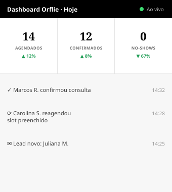

Agente de Gestão Comercial
Cada horário vazio é receita que não volta.
O AGC mantém sua agenda sempre cheia — confirma consultas, reorganiza cancelamentos e recupera leads perdidos, todos os dias da semana.
O Problema
O custo que sua agenda esconde
Toda consulta que cai por falta de confirmação, todo cancelamento sem reposição e todo lead que esfria sem retorno é receita que já era sua e foi embora. Isoladamente parece pouco — somado, é um dos maiores vazamentos de faturamento de quem vive de agenda.
Estimativa para profissionais com 20–25 atendimentos por semana, a R$200–400 por consulta.
AGC
Gestão Comercial
Como Funciona
Três passos. Zero complicação.
Sem trocar de sistema, sem treinar equipe. O AGC entra na sua rotina do jeito que ela já funciona.
Conectamos sua agenda
Integramos com o sistema que você já usa — sem migração de dados e sem curva de aprendizado.
O AGC entra em ação
Confirma consultas, reorganiza cancelamentos e faz follow-up de leads automaticamente, 7 dias por semana.
Você só aparece para atender
Agenda cheia, pacientes confirmados, nenhum lead esquecido. Você foca no que gera resultado.
O AGC em Ação
Assim é uma confirmação feita pelo AGC.
Enquanto você atende, o AGC já está confirmando o próximo paciente e respondendo os leads novos — tudo pelo WhatsApp.
Tecnologia Própria
Acompanhe cada movimento em tempo real.
Sistema desenvolvido internamente pela Orflie — cada confirmação, cancelamento e novo lead aparece no exato momento em que acontece.
Sistema 100% próprio
Desenvolvido do zero pela Orflie, sem depender de ferramentas ou planilhas de terceiros.
Atualização em tempo real
Confirmou, cancelou, reagendou ou chegou um lead novo — você vê acontecer na hora.
Acesso de qualquer lugar
Celular, tablet ou computador — a agenda sincronizada onde você estiver.

Argumento Financeiro
Menos custo, mais resultado.
Compare o custo real de uma secretária CLT com o do AGC — disponibilidade contínua, sem encargos.
- 73% em encargos trabalhistas
- Férias e 13º salário
- Rescisão como passivo oculto
- Ausências e imprevistos
- Zero encargos trabalhistas
- Zero 13º e férias
- Disponibilidade contínua
- Custo previsível e fixo
Vagas limitadas para novas implantações este mês.
Para Quem É
Feito para quem vive de agenda.
Negócios onde cada horário tem um valor — e cada falha nele, também.
Dentistas
Alto volume de consultas recorrentes, onde cada slot vazio pesa direto no faturamento do mês.
Clínicas
Múltiplos profissionais e agendas cruzadas, onde um cancelamento exige reação imediata.
Advogados
Audiências e reuniões que exigem confirmação constante e nenhuma margem para falha.
Consultores
Coaches e consultores que faturam por hora sentem na conta cada horário que não se confirma.
Prova Social
Resultados reais, agendas reais.
"Antes perdíamos consultas por no-show toda semana. No primeiro mês com o AGC, os cancelamentos sem aviso quase zeraram."
"Trocamos secretária e sistema de agendamento pelo AGC. Reduzimos custo e ainda convertemos mais leads."
"Em 30 dias o follow-up automático já tinha recuperado leads que a gente considerava perdidos."
Antes de Decidir
"Minha agenda não está tão vazia assim."
Talvez não pareça mesmo. Mas 10% de no-show em 20 consultas por semana já são mais de R$800 que somem sem aviso — não é sobre agenda vazia, é sobre receita que existia e foi embora.
Dúvidas Frequentes
Perguntas que a maioria faz antes de contratar.
Qual é o valor do AGC?
O valor varia conforme o volume de atendimentos e as funcionalidades contratadas. Na conversa inicial, montamos uma proposta sob medida para o seu negócio.
Preciso trocar meu sistema de agendamento?
Não. O AGC se integra ao sistema que você já usa — sem migração de dados e sem mudança de rotina.
E se eu quiser cancelar?
Sem fidelidade. Você cancela quando quiser, sem multa e sem burocracia.
Em quanto tempo eu vejo resultado?
A maioria dos clientes percebe redução de no-show já na primeira semana. Em 30 dias o impacto financeiro já é mensurável.
O AGC substitui minha secretária?
Não necessariamente. O AGC assume a gestão comercial da agenda — confirmações, follow-up e reagendamentos. Sua secretária, se você tiver uma, fica livre para o atendimento presencial.
Solicite sua Proposta
Receba uma proposta personalizada em até 24h.
Sem compromisso. Preencha os dados abaixo e falamos com você pelo WhatsApp.
Seus dados são usados apenas para entrar em contato. Sem spam.
Agente de Gestão Comercial
Seu comercial não pode falhar.
O AGC garante que não vai.
Sem compromisso — só uma conversa rápida.
Programa de Parcerias
Indique o AGC e ganhe todo mês.
Para consultores, agências, contadores e influenciadores: indique a Orflie para a sua rede e receba uma comissão recorrente enquanto o cliente indicado continuar ativo.